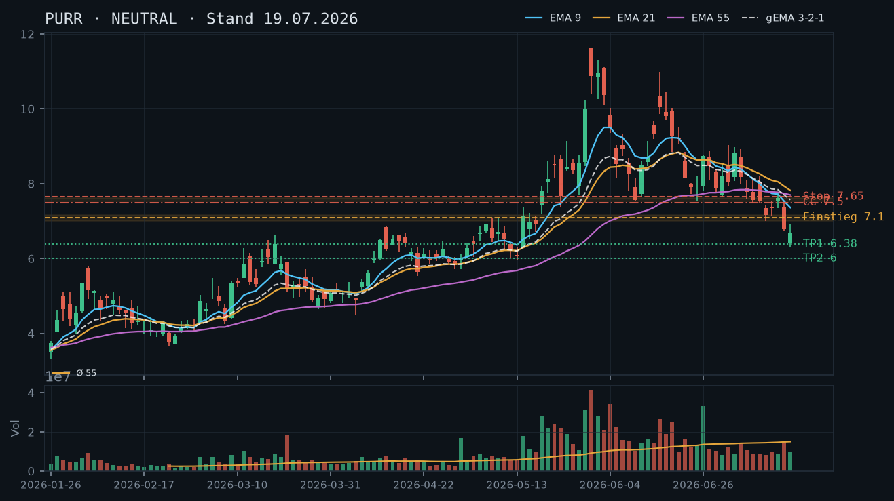
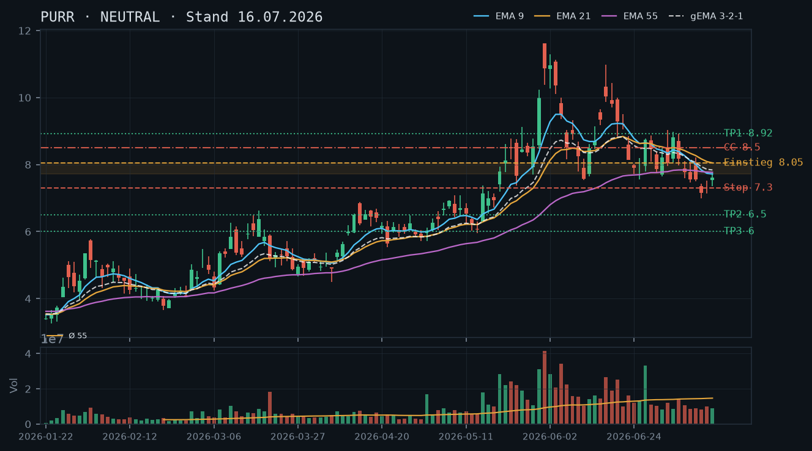
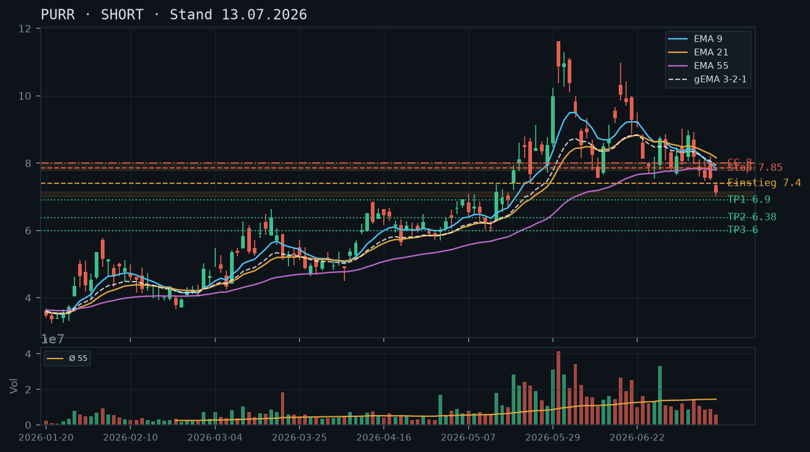
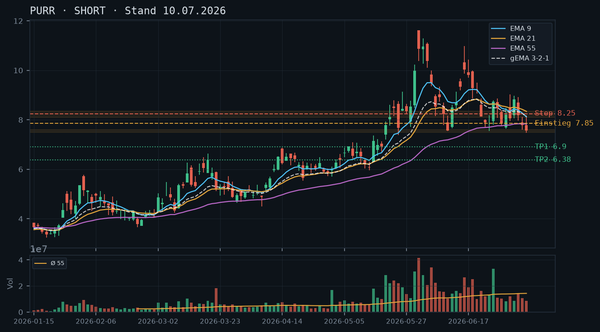

PURR
Analyse-Historie · neueste zuerstPURR pendelt seit dem Tief bei 6,31$ (17.07.) in einer engen Range zwischen 6,68$ und 7,25$ ohne Volumen-Bestätigung – der Abwärtstrend ist strukturell intakt, aber der Kurs zeigt erste Stabilisierungsansätze, die noch keine klare Richtungsentscheidung erlauben.

1 · Trendstruktur
Der übergeordnete Abwärtstrend seit dem Allzeithoch bei 11,62$ (01.06.) ist ungebrochen: sinkende Hochs (10,87→8,92→7,61→7,25) und sinkende Tiefs (10,37→7,78→7,00→6,31). Das Reversal-Tief der Analyse vom 13.07. bei 7,00$ wurde am 16.07. mit einem Low von 6,74$ gebrochen (Bestätigung des SHORT-Setups der Vorlage). Das folgende Intraday-Tief bei 6,31$ (17.07.) ist derzeit das maßgebliche Swing-Tief und die erste Unterstützungsreferenz. Seit dem 20.07. pendelt der Kurs in einer engen Range 6,68–7,25$, Schlusskurs gestern (22.07.) bei 6,85$. Der heutige IBKR-Kurs von 6,88$ (+0,44%) ändert an der Gesamtstruktur nichts.
2 · Candlestick-Formationen
Die letzten vier Kerzen (19.–22.07.) zeigen ein unentschlossenes Bild: Nach dem Hammer-artigen Tief am 17.07. (Low 6,31$, Close 6,68$) folgte am 20.07. eine Inside-Bar mit Erholung auf 7,05$ – jedoch bei extrem niedrigem rel. Volumen (0,50, also nur 50% des Durchschnitts). Am 21.07. erneut schwaches Volumen (0,62) mit minimalem Kursgewinn (+0,03$). Die Kerze vom 22.07. (Open 6,80, High 7,13, Close 6,85) zeigt einen langen Docht nach oben – der Kurs wurde bei 7,13$ abgewiesen und schloß nahe am Tief der Tagesrange. Das ist ein bärisches Signal: Die Käufer konnten den Test der 7,00$-Marke nicht halten.
3 · EMA-Lage (9 / 21 / 55)
Die EMA-Konstellation bleibt klar bärisch: EMA9 (7,17) > EMA21 (7,61) > EMA55 (7,63) – wobei EMA21 und EMA55 mit nur 2 Cents Abstand quasi komprimiert sind, was auf ein mögliches Death-Cross-Signal in Kürze hindeutet. Der gema_321 liegt bei 7,39$ und damit deutlich über dem aktuellen Kurs (6,85$). Der Kurs notiert unter allen drei EMAs sowie dem gewichteten Verbund – klassisch bärische Anordnung. Die Reihenfolge EMA9 < EMA21 ≈ EMA55 bei fallendem EMA21/EMA55 signalisiert beschleunigten Trenddruck. Die Erholung der letzten Tage hat den EMA9 nicht zurückerobert (aktuell 7,17 vs. Kurs 6,85/6,88).
4 · Trade-Setup
| Richtung | Short |
| Einstieg | 7,10–7,17 (Limit-Short bei Erholung in EMA9-Zone / Widerstandsbereich 7,00–7,25) |
| Stop | 7,35 (über dem Hoch vom 21.07. bei 7,25$ und dem kurzfristigen Swing-High-Cluster) |
| Ziel | 6,31 (erstes Ziel: Swing-Tief 17.07.) / 6,00 (zweites Ziel: psychologische Marke / Voranalyse-Ziel) |
| CRV | 2.5 : 1 (zum Ziel 6,31) / 3.5 : 1 (zum Ziel 6,00) |
5 · Stillhalter (max. 12 Tage)
Der Abwärtstrend ist strukturell intakt, der Kurs liegt unter allen EMAs, und der 22.07.-Docht-Test bei 7,13$ wurde abgewiesen. Ein Covered Call auf den vorhandenen Aktienbestand (200 Stück) oberhalb des EMA9-Widerstands ist das einzig trendkonforme Stillhalter-Instrument. Ein CSP bleibt null: Unterhalb des Kurses gibt es lediglich das einmal getestete Tief bei 6,31$ als Referenz – kein mehrfach bestätigter Support-Cluster, der einen seriösen Put-Strike rechtfertigen würde. Qualität vor Vollständigkeit.
| Geschäft | Covered Call |
| Strike | 7.5 |
| Puffer | 9.0 % |
| Zone | über EMA9 (7,17), Widerstandscluster 7,13–7,25$ (Hochs 22./21.07.) und dem kurzfristigen Deckel bei 7,25$ |
| Verfall bis | 2026-08-01 (9 Tage) |
| Begründung | Strike 7,50$ liegt klar über dem fallenden EMA9 (7,17), über dem abweisenden Docht vom 22.07. (High 7,13$) und über dem Swing-High vom 21.07. (7,25$). Der Kurs müsste zunächst EMA9 bei 7,17$ zurückerobern, dann das 21.07.-High bei 7,25$ überwinden – erst danach wäre der Strike 7,50$ relevant. Der Puffer von ~9,0% zum aktuellen Kurs (6,88$, IBKR-Snapshot) ist technisch durch diesen dreifachen Widerstandsbereich gestützt. Andienungsszenario: Eine Abgabe von Aktien bei 7,50$ wäre im laufenden Abwärtstrend ein akzeptabler Teilverkauf – der Kurs liegt 42% unter dem Allzeithoch von 11,62$, und 7,50$ stellt im Kontext des Abwärtstrends keinen attraktiven Haltepreis dar. Nächster verfügbarer Standard-Verfallstermin innerhalb von 12 Tagen: 01.08.2026. In der Optionskette zu prüfen: Existiert ein liquides Instrument für PURR mit Verfall 01.08.? Prämie im Verhältnis zum 9,0%-Puffer sowie Bid-Ask-Spread. Roll-Trigger: Position schließen oder auf höheren Strike rollen, wenn der Kurs EMA9 (7,17$) von unten zurückerobert UND das 21.07.-High bei 7,25$ mit Volumen überwindet. |
Bestand: Laut IBKR-Snapshot (23.07., 11:38 Uhr): 200 Aktien PURR im Bestand, keine offenen Optionspositionen. Der in der Analyse vom 19.07. empfohlene CC Strike 7,50$, Verfall 25.07., ist nicht eröffnet worden – kein Roll-Bedarf, kein Konflikt mit bestehenden Positionen. Ein Covered Call auf 100 Aktien (ein Kontrakt, erster Tranche) bei Strike 7,50$, Verfall 01.08.2026, ist technisch konsistent und trendkonform. Der zweite Tranche (weitere 100 Aktien) kann als Reserve für einen möglichen Roll oder einen zweiten CC bei Kursanstieg zurückgehalten werden. Hinweis: Snapshot-Zeitstempel 11:38 Uhr – Intraday-Kursbewegungen bis Handelsschluss sind nicht berücksichtigt; Kurs und EMA-Werte vor Eröffnung eines Trades erneut prüfen.
Ausführliche Analyse vom 23.07.2026 anzeigen
PURR – Detailanalyse 23.07.2026
1. Trendstruktur & Abgleich mit Voranalysen
Der übergeordnete Abwärtstrend seit dem Spike-Hoch bei 11,62$ (01.06.2026) ist ungebrochen. Die Sequenz sinkender Hochs und Tiefs: 11,62→10,97→10,04→9,34→8,92→7,61→7,25$ (Hochs) und 10,37→8,53→7,78→7,00→6,31$ (Tiefs). Die Analyse vom 13.07. prognostizierte Short-Ziele bei 6,50$ und 6,00$ – das Ziel 6,50$ wurde nicht exakt erreicht, aber das Intraday-Tief vom 17.07. bei 6,31$ bestätigt die bärische Richtung. Die Analyse vom 16.07. (NEUTRAL, Abwarten) war korrekt in der Einschätzung fehlender Bestätigung: Die nachfolgende Kerze vom 16.07. (Close 6,78$) brach das Reversal-Tief bei 7,00$ und bestätigte den Short-Bias der Vorlage vom 13.07. rückwirkend. Die Analyse vom 19.07. (Short-Einstieg bei 7,10$, Stop 7,65$) war strukturell korrekt, der Einstieg wurde jedoch durch den direkten Rückfall auf 6,31$ am selben Tag überholt – ein Gap-Down-artiges Verhalten, das keinen sauberen Einstieg erlaubte.
Aktuelle Kernstruktur: Der Kurs pendelt seit dem 20.07. in einer engen Range 6,65–7,25$. Die Range ist eng und volumenarm (rel. Volumen: 0,50 / 0,62 / 0,55 an den letzten drei Tagen). Das Intraday-Tief bei 6,31$ (17.07.) ist der aktuelle Swing-Low und die einzige Unterstützungsreferenz – sie ist aber erst einmal getestet, kein bestätigter Support-Cluster. Erst ein zweiter Test und Hold würde 6,31$ als valide Zone qualifizieren.
2. Candlestick-Formationen
Die Kerze vom 22.07. ist die technisch relevanteste der aktuellen Phase: Open 6,80$, High 7,13$, Close 6,85$. Der lange Docht nach oben (7,13$ als Tageshoch) zeigt, dass der Test der psychologisch wichtigen 7,00$-Marke und des kurzfristigen Widerstandsclusters (EMA9 bei 7,17$) gescheitert ist. Der Schlusskurs nahe dem Tagestief ist bärisch. Dieses Muster ergänzt die Shooting-Star-Charakteristik und bestätigt die Zone 7,00–7,25$ als aktiven Widerstandsbereich.
Die Kerzen vom 20.07. (Bullish, Low 6,65$, Close 7,05$) und 21.07. (Doji-artig, +0,03$) hatten beide unterdurchschnittliches Volumen – keine Käuferkraft dahinter. Der einzige Volumen-Spike der jüngsten Phase war der 16.07. (rel. Volumen 0,99), der den Abverkauf auf 6,74$ markierte.
3. EMA-Analyse & gema_321
EMA-Werte per 22.07.: EMA9: 7,17 / EMA21: 7,61 / EMA55: 7,63 / gema_321: 7,39. Die Reihenfolge (EMA9 < EMA21 ≈ EMA55) mit dem fast-identischen EMA21/EMA55-Abstand von 2 Cents ist ein Kompressions-Artefakt: Der EMA55 fällt von oben (7,84 am 07.07. → 7,63 aktuell), während der EMA21 schneller fällt und sich annähert. Ein Death-Cross EMA21/EMA55 steht unmittelbar bevor und würde das bärische Signal verstärken. Der gema_321 bei 7,39$ liegt 54 Cents über dem Kurs – der Verbund zeigt keine Annäherungstendenz. Alle drei EMAs fallen. Der Kurs (6,85$/6,88$) notiert unter dem gesamten EMA-Spektrum und hat den EMA9 seit dem 09.07. nicht zurückerobert.
4. Trade-Setups (Long/Short/Neutral)
Setup A – Bevorzugtes Short-Setup (Limit-Einstieg):
- Einstieg: 7,10–7,17$ (Limit-Short bei Erholung in EMA9 / Widerstandscluster)
- Stop: 7,35$ (über Swing-High 21.07. bei 7,25$ mit Puffer)
- Ziel 1: 6,31$ (Swing-Tief 17.07.) → CRV ca. 2,5:1
- Ziel 2: 6,00$ (psychologische Marke, Voranalyse-Ziel) → CRV ca. 3,5:1
- Begründung: Trendkonform, Einstieg im Widerstand, klar definierter Stop über dem letzten Swing-High.
Setup B – Aggressiver Short-Einstieg (Market/Stop-Sell):
- Einstieg: unter 6,68$ (Bruch des 20.07.-Lows → Bestätigung nächste Abwärtswelle)
- Stop: 7,00$ (runde Marke / Widerstand)
- Ziel: 6,31$ → CRV ca. 1,1:1 (knapp), 6,00$ → CRV ca. 2,1:1
- Begründung: Momentum-Einstieg nach Strukturbruch, niedrigeres CRV zum ersten Ziel macht dies weniger attraktiv.
Setup C – Long-Setup (nur bei Trendumkehr-Signal):
- Einstieg: über 7,35$ mit Volumen-Bestätigung (Rückeroberung EMA9 + Swing-High-Bruch)
- Stop: 6,85$ (unter aktuellem Kurs / Tagesunterstützung)
- Ziel: 7,78–8,05$ (EMA21/EMA55-Cluster) → CRV ca. 1,5:1
- Begründung: Kontratrend, nur bei echtem Volumen-Breakout sinnvoll. Derzeit keine Anzeichen – nicht bevorzugt.
5. Stillhalter-Schwerpunkt: Covered Call – Detailanalyse
Zonen-Herleitung Strike 7,50$: Der Strike ergibt sich aus dem Konfluenzbereich dreier Widerstände: (1) Fallender EMA9 bei 7,17$, der in den nächsten Tagen weiter sinken wird (~7,05–7,10$ bis 01.08.); (2) Abweisendes Tageshoch vom 22.07. bei 7,13$; (3) Swing-High vom 21.07. bei 7,25$. Der Strike 7,50$ liegt über dieser gesamten Widerstandsstruktur und hat den Cluster als Puffer vor sich – konsistent mit dem Prinzip, dass der Strike nicht in der Zone liegt, sondern dahinter. Der nächste relevante Widerstand nach oben wäre die 7,61$-Zone (Hoch 15.07. / ehemaliger EMA21-Bereich), dann 7,78$-Cluster. Strike 7,50$ liegt exakt zwischen diesen Strukturen – handelstechnisch sinnvoll auf dem nächsten 50-Cent-Step.
Verfallstermin-Logik: Heutiges Datum 23.07.2026 (Mittwoch). Nächster Standard-Freitag: 25.07.2026 (2 Tage) – sehr kurze Laufzeit, Prämie dürfte minimal sein, da Kurs mit 9% Puffer zum Strike weit OTM liegt. Überübernächster Standard-Freitag: 01.08.2026 (9 Tage) – bevorzugt, da mehr Zeitwert bei gleicher Strike-Struktur. Maximal-Laufzeit 12 Tage wäre der 04.08.2026 (Montag nach dem Freitag, kein Standard-Verfall) → 01.08.2026 ist der optimale Verfallstermin innerhalb der 12-Tage-Grenze.
Andienungsszenario: Würde PURR bis zum 01.08. über 7,50$ schließen und die Aktien angedient (abgerufen), entspräche dies einem Verkauf bei 7,50$ + Prämieneinnahme. Im Kontext des intakten Abwärtstrends (Allzeithoch 11,62$, aktuell 6,88$) ist 7,50$ kein attraktiver Haltepreis für die Langfrist-Perspektive. Eine Andienung wäre ein akzeptabler, trendkonformer Teilverkauf der ersten 100-Aktien-Tranche.
Roll-Trigger und Anpassungslogik: Den CC schließen oder rollen, wenn: (a) Kurs EMA9 (7,17$, fallend) von unten mit Volumen zurückerobert UND (b) das 21.07.-High bei 7,25$ im Close überwunden wird. Roll-Vorschlag in diesem Szenario: CC 7,50$ schließen, neuer CC Strike 8,00$, gleicher oder nächster Verfall – dann erneut über dem neuem EMA9-Niveau. Verfällt der CC wertlos (Kurs bleibt unter 7,50$): zweite Tranche (weitere 100 Aktien) steht für einen neuen CC-Zyklus zur Verfügung, wiederum Strike technisch aus der dann aktuellen EMA/Widerstandsstruktur ableiten.
CSP-Ausschluss-Begründung: Das Tief bei 6,31$ (17.07.) ist die einzige Referenz unterhalb des Kurses – einmal getestet, nicht bestätigt. Kein mehrfach bestätigter Support-Cluster existiert zwischen 6,00$ und 6,85$. Ein CSP bei z.B. 6,00$ hätte rechnerisch einen Puffer von nur ~13%, aber keinerlei technische Unterstützung zwischen Strike und aktuellem Kurs. Ein einzelner Test ist kein Support – Qualität vor Vollständigkeit.
Optionskette – manuell zu prüfen: (1) Existiert ein liquides Optionsinstrument für PURR mit Verfall 01.08.2026? (2) Bid-Ask-Spread des CC 7,50$ – bei Small-Cap-Optionen oft weit, Mid-Price anpeilen. (3) Prämie im Verhältnis zum 9,0%-Puffer: Mindest-Richtwert wären ca. 0,10–0,15$ Mid-Preis, um die Transaktion nach Kosten sinnvoll zu machen. (4) Open Interest und Tagesvolumen am Strike 7,50$ prüfen. Kein IBKR-Optionsdaten-Snapshot verfügbar – alle Ketten-Angaben wären spekulativ und werden daher ausgelassen.
PURR hat nach dem Bruch der 7,00$-Marke (Reversal-Tief aus 13.07.) ein neues Mehrwochen-Tief bei 6,31$ ausgebildet und notiert nun bei 6,78$ – der Abwärtstrend ist intakt, aber ein erster Stabilisierungsversuch mit Hammer-Kerzen-Charakter macht einen direkten Short-Einstieg ohne Bestätigung riskant.

1 · Trendstruktur
Der Abwärtstrend seit dem Allzeithoch-Bereich bei ~11,62$ (01.06.) ist strukturell klar intakt: fortlaufend tiefere Hochs (11,62 → 10,04 → 9,34 → 8,92 → 8,21 → 7,61) und tiefere Tiefs (10,38 → 7,54 → 7,00 → 6,31). Die Analyse vom 16.07. hatte das Reversal-Tief bei 7,00$ als entscheidende Waterline definiert – diese wurde am 16.07. mit dem Low bei 6,74$ signifikant gebrochen. Damit ist das bullische Szenario (Long über 8,05) der Vorlage hinfällig. Der Kurs notiert bei 6,78$ ohne valide Unterstützungszone bis zum Bereich ~6,00–6,38$ (Zielzone aus den Short-Setups der Juli-Analysen). Die Erholung der KW 28 (7,16→7,61) hat lediglich ein niedrigeres Hoch ausgebildet.
2 · Candlestick-Formationen
Die letzten drei Kerzen zeigen eine beachtenswerte Sequenz: Am 15.07. eine bullische Kerze (7,35→7,61, +3,5%), am 16.07. ein bearisher Engulfing/Breakdown mit Close bei 6,78$ und Range 6,74–7,53$ (rel. Volumen 0,99 – durchschnittlich, was den Breakdown nicht volumenstark bestätigt), am 17.07. eine Kerze mit langem unteren Docht (Low 6,31$, Close 6,68$) – ein Hammer-ähnliches Muster, das kurzfristige Kaufinteresse signalisiert. Der Schlusskurs bei 6,68$ nahe der Tagesmitte relativiert die Hammer-Signifikanz jedoch. Ohne Volumen-Bestätigung (rel. Volumen 0,67 = stark unterdurchschnittlich) ist dies als unbestätigter Stabilisierungsversuch zu werten.
3 · EMA-Lage (9 / 21 / 55)
Die EMA-Reihenfolge zum letzten Datenpunkt (17.07.): EMA9 = 7,36 / EMA21 = 7,82 / EMA55 = 7,70 / gema_321 = 7,57. Auffällig: EMA55 (7,70) liegt über EMA21 (7,82)? Nein – EMA21 7,82 > EMA55 7,70 – die Reihenfolge ist EMA9 < EMA55 < gema_321 < EMA21, was ein Kompressions-Artefakt des langsameren EMA21-Abbaus darstellt: Der EMA21 reagiert träger auf den jüngsten Kursverfall als der EMA55, was in steil fallenden Märkten vorübergehend auftreten kann. Der Kurs (6,78$) notiert deutlich unter dem gesamten EMA-Cluster (6,78 vs. EMA9 bei 7,36 = ~8,6% Abstand) – klassisch bearish. Alle EMAs fallen, der gema_321 fällt von 8,15 (01.06.) auf jetzt 7,57 – der gewichtete Verbund zeigt anhaltenden Abwärtsdruck.
4 · Trade-Setup
| Richtung | Short |
| Einstieg | 7,10 (Limit-Short bei Erholung in den EMA9-Bereich / unter das 16.07.-High) |
| Stop | 7,65 (über dem 15.07.-High und dem EMA9-Cluster) |
| Ziel | 6,38 / 6,00 |
| CRV | 1.3 : 1 (zum ersten Ziel 6,38) / 2.0 : 1 (zum Ziel 6,00) |
5 · Stillhalter (max. 12 Tage)
Mit 200 Aktien im Bestand (IBKR-Snapshot: 200 Stück) ist ein Covered Call auf 100 Aktien möglich – das ist das einzig trendkonforme Stillhalter-Geschäft. Der Kurs hat das Reversal-Tief bei 7,00$ gebrochen und ein neues Tief bei 6,31$ ausgebildet. Für einen CSP fehlt jede tragfähige, mehrfach bestätigte Unterstützungszone oberhalb von 6,00$ – diese Zone ist erst einmal getestet (Short-Ziel der Voranalysen, kein echter Support-Cluster). CSP bleibt daher null.
| Geschäft | Covered Call |
| Strike | 7.5 |
| Puffer | 10.6 % |
| Zone | über EMA9 (7,36) und dem Kurzfrist-Widerstand 7,53–7,61$ (Hochs 16./15.07.) |
| Verfall bis | 2026-07-25 (6 Tage) |
| Begründung | Strike 7,50$ liegt klar über dem fallenden EMA9 (7,36), dem jüngsten Swing-High vom 16.07. bei 7,53$ und dem 15.07.-Schlusskurs bei 7,61$. Der Puffer von ~10,6% zum aktuellen Kurs 6,78$ ist technisch durch den EMA-Cluster (EMA9 7,36 / gema_321 7,57) als Hürde gestützt – der Kurs müsste diesen Widerstandsbereich erst zurückgewinnen, bevor der Strike 7,50$ relevant wird. Andienung bei 7,50$ (Abgabe der Aktien) wäre im laufenden Abwärtstrend ein akzeptabler Exit vom aktuellen Bestand, da der Trend seit 11,62$ intakt ist. Der CC-Strike der Vorlage vom 16.07. (8,50$) liegt nun 25,4% über dem Kurs – weit OTM und dürfte kaum noch Prämie generieren; daher Anpassung auf 7,50$ sinnvoll. In der Optionskette zu prüfen: Existiert ein liquides Instrument für PURR mit Verfall 25.07.? Prämie im Verhältnis zum Puffer (10,6%) und Bid-Ask-Spread. Roll-Trigger: Schließen oder rollen, wenn der Kurs EMA9 (7,36) von unten zurückerobert und das 15.07.-High bei 7,61$ überschreitet. |
Bestand: Laut IBKR-Snapshot bestehen 200 Aktien PURR ohne offene Optionspositionen. Ein Covered Call auf 100 Aktien ist möglich (ein Kontrakt). Der zuvor empfohlene CC 8,50$ (Analyse 16.07.) ist nicht im Bestand – kein Roll-Bedarf. Empfehlung: CC Strike 7,50$, Verfall 25.07., als trendkonformes Instrument zur Prämiengenerierung und gleichzeitig als potenzieller Exit-Mechanismus für den Teilbestand bei 7,50$. Sollte der Kurs unter 6,31$ (neues Tief) fallen, bleibt der CC wertlos und verfällt – das ist das gewünschte Szenario. Bei einem überraschenden Kursanstieg über 7,61$ (15.07.-High): Position glattstellen oder auf höheren Strike rollen.
Ausführliche Analyse vom 19.07.2026 anzeigen
PURR – Detailanalyse 19.07.2026
1. Trendstruktur – Abgleich mit historischen Analysen
Die Short-Empfehlungen vom 10.07. und 13.07. haben sich strukturell bestätigt, die konkreten Kursziele (6,90$ / 6,50$ / 6,00$) wurden jedoch noch nicht erreicht. Die Analyse vom 16.07. hatte zutreffend die Bounce-Bewegung (7,00→7,61$) auf unterdurchschnittlichem Volumen identifiziert und als unbestätigt eingestuft – diese Einschätzung war korrekt: Der Bruch des Reversal-Tiefs bei 7,00$ erfolgte am 16.07. mit einem Close von 6,78$ und einem Intraday-Low von 6,74$. Am 17.07. wurde das neue Mehrwochen-Tief bei 6,31$ markiert.
Hochs-/Tiefs-Sequenz (Trendstruktur-Update):
Hochs: 11,62$ (01.06.) → 10,04$ (16.06.) → 9,34$ (15.06.) → 8,92$ (07.07.) → 7,61$ (15.07.) – jedes Hoch tiefer als das vorherige.
Tiefs: 10,38$ (01.06. Intraday) → 7,54$ (10.06.) → 7,00$ (13.07.) → 6,31$ (17.07.) – ebenso. Trend mathematisch intakt, keine Trendumkehrsignale erkennbar.
Wichtige Levels:
- Widerstand 1: 7,00–7,16$ – ehemaliges Reversal-Tief vom 13.07. und der Konsolidierungsbereich KW 28; jetzt Widerstand (unbestätigt, einmal getestet von unten am 17.07.)
- Widerstand 2: 7,53–7,61$ – Hochs vom 15. und 16.07., darunter liegender EMA9 (7,36)
- Widerstand 3: EMA-Cluster 7,36–7,82$ (EMA9 bis EMA21)
- Support (unbestätigt): 6,31$ – neues Tief vom 17.07., einmal berührt; kein echter Support-Cluster
- Zielzone: 6,00–6,38$ – aus den Voranalysen abgeleitet, bisher ungetestet
2. Candlestick-Formationen
Die Kerze vom 16.07. ist strukturell entscheidend: Eröffnung 7,39$, High 7,53$, Low 6,74$, Close 6,78$ – ein bearisher Marubozu-ähnlicher Body mit kleinem oberem Docht. Die Kerze schließt nahe dem Tages-Low und unter dem Reversal-Tief von 7,00$, was den Breakdown technisch bestätigt. Das relative Volumen von 0,99 (nahezu exakt Durchschnitt) ist bemerkenswert: Der Breakdown erfolgte ohne Volumen-Spike – kein capitulation-artiges Selling. Das lässt entweder auf weiteres Abwärtspotenzial (kein Erschöpfungsverkauf) oder auf schwaches Interesse schließen.
Die Kerze vom 17.07.: Eröffnung 6,415$, High 6,905$, Low 6,31$, Close 6,68$ – langer unterer Docht (Range ~0,595$, Docht unten ~0,37$). Hammer-Charakter, aber Close nahe Tagesmitte, kein starkes Reversal-Signal. Rel. Volumen 0,67 (stark unterdurchschnittlich) – kein Kaufdruck. Ohne Bestätigung durch eine bullische Folgekerze auf erhöhtem Volumen ist dies als technisches Intraday-Low ohne Trendrelevanz zu werten.
3. EMA-Analyse
Werte 17.07.2026: EMA9 = 7,36$ | EMA21 = 7,82$ | EMA55 = 7,70$ | gema_321 = 7,57$.
Kompressions-Artefakt: EMA55 (7,70$) liegt aktuell unter EMA21 (7,82$), was in der normalen Erwartung (bullisch: EMA9 > EMA21 > EMA55) umgekehrt erscheint. Dies ist ein klassisches Kompressions-Artefakt: Der EMA21 reagiert aufgrund seiner Länge träger auf den schnellen Kursverfall der letzten Wochen als der EMA55, dessen Basis durch den starken Aufwärtstrend Mai/Juni noch sehr hoch liegt. In stark fallenden Märkten mit langer Basis kann dieser Effekt temporär auftreten. Alle drei EMAs fallen weiterhin, die Reihenfolge wird sich mit weiterer Schwäche normalisieren (EMA9 < EMA21 < EMA55 = vollständige bearishe Ausrichtung).
Der Abstand des Kurses (6,78$) zum EMA9 (7,36$) beträgt ~8,6% – der Kurs ist 'extended' nach unten. Dies erhöht die Wahrscheinlichkeit einer technischen Erholung Richtung EMA9, senkt aber nicht das Setup-Ziel. Der gema_321 (7,57$) fällt kontinuierlich seit 8,15$ (01.06.) und bestätigt den gewichteten Abwärtsimpuls.
4. Trade-Setups – Mehrere Szenarien
Setup A (Bevorzugt): Short bei Erholung – Limit-Short
Einstieg: 7,10$ (Limit, bei Erholung in den Bereich 7,00–7,16$ / ehemaliges Reversal-Tief jetzt Widerstand)
Stop: 7,65$ (über 15.07.-High 7,61$ und oberhalb EMA9 7,36$-Cluster)
Ziel 1: 6,38$ | CRV zum Ziel 1: (7,10 – 6,38) / (7,65 – 7,10) = 0,72 / 0,55 = 1,3 : 1
Ziel 2: 6,00$ | CRV zum Ziel 2: (7,10 – 6,00) / 0,55 = 2,0 : 1
Logik: Das ehemalige Support-Level 7,00–7,16$ wird als Flip-Resistance genutzt. Der Einstieg bei 7,10$ liegt unter dem Breakdown-Pivot und gibt dem Kurs Raum für den normalen Retest, ohne über die kritische 7,65$-Marke zu steigen.
Setup B: Direkter Short-Einstieg – Market/Stop-Sell
Einstieg: 6,68–6,78$ (aktuelles Niveau, Bestätigung der Schwäche)
Stop: 7,05$ (über die Intraday-Hochzone 17.07. = 6,905$, Puffer)
Ziel 1: 6,31$ (neues Tief, kurzfristig) | CRV: (6,78 – 6,31) / (7,05 – 6,78) = 0,47 / 0,27 = 1,7 : 1
Ziel 2: 6,00$ | CRV: 0,78 / 0,27 = 2,9 : 1
Problem: Kein idealer Einstieg – der Kurs ist bereits extended (8,6% unter EMA9), Hammer-Kerze vom 17.07. erhöht kurzfristiges Reversal-Risiko. Setup B nur für aggressivere Profile.
Setup C (Konditional Long – sehr konservativ):
Nur bei Bestätigung: Long über 7,65$ auf Tagesschlusskurs-Basis (Rückeroberung EMA9 + 15.07.-High)
Stop: 7,00$ (unter das Reversal-Tief)
Ziel: 8,92$ (Swing-High 07.07.) | CRV: (8,92 – 7,65) / (7,65 – 7,00) = 1,27 / 0,65 = 2,0 : 1
Dieses Setup bleibt nachrangig und ist nur für den Fall eines vollständigen Trendumkehrsignals mit Volumen-Bestätigung relevant. Aktuell nicht aktiv.
5. Stillhalter-Analyse (Schwerpunkt)
IBKR-Snapshot-Auswertung
Zeitstempel: 12:11 Uhr, 19.07.2026 – Kurs 6,78$, keine offenen Optionspositionen, Aktienbestand vorhanden (200 Stück). Der Snapshot ist intraday und aktuell; keine wesentliche Zeitverzögerung. Mit dem Bestand können bis zu 2 Kontrakte Covered Calls gehandelt werden – im Sinne der Risikodisziplin und Datenschutz werden hier keine Stückzahlen empfohlen, nur die Instrument-Logik.
Cash-Secured Put – Warum null?
Der CSP wurde in allen drei Voranalysen konsequent abgelehnt, und diese Entscheidung ist weiterhin korrekt. Die einzig denkbare Support-Zone bei 6,00$ ist bisher ungetestet – sie ist ein Kursziel aus den Short-Setups, kein mehrfach bestätigter Support-Cluster. Das neue Tief bei 6,31$ (17.07.) ist ebenfalls erst einmal berührt. Ein CSP auf 5,50$ oder 6,00$ wäre theoretisch möglich, aber: (a) Die Prämie wäre bei dem Abstand minimal, (b) das Andienungsszenario – Kauf zu 5,50–6,00$ – ist akzeptabel, aber im aktuellen Abwärtstrend ohne Bodenbildungssignal riskant. CSP erst sinnvoll bei zwei Bedingungen: nachgewiesener Support-Cluster (mindestens zwei Rücktests) und Trendumkehrsignal (z.B. bullishes engulfing auf >1,5x Volumen).
Covered Call – Detailherleitung
Strike-Herleitung 7,50$:
- EMA9 (17.07.): 7,36$ – erste Hürde für jeden Erholungsversuch
- Swing-High 16.07.: 7,53$ – kurzfristiger Widerstand, einfach getestet (unbestätigt, aber relevant)
- Swing-High 15.07.: 7,61$ – zweiter Widerstandspunkt; zusammen mit 7,53$ bildet 7,53–7,61$ einen kurzfristigen Widerstandsbereich
- Strike 7,50$ liegt unter dem EMA9 (7,36$)? Nein – 7,50$ liegt über dem EMA9 (7,36$) und unter dem 16.07.-High (7,53$). Präziser: Der Strike liegt in der Widerstandszone, nicht klar darüber.
- Anpassung auf 7,50$ ist vertretbar, weil: (a) Handelsgängiger Strike (0,50$-Schritte), (b) Zone 7,36–7,61$ ist die nächste technische Hürde, (c) Der Kurs müsste ~10,6% steigen, um den Strike zu erreichen – das ist in 6 Tagen (bis 25.07.) bei rel. Volumen 0,67 (Letztstand) unwahrscheinlich.
Andienungsszenario: Abgabe des Aktienbestands (anteilig) bei 7,50$ wäre im laufenden Abwärtstrend ein akzeptabler Teilausstieg bei einer Kursverbesserung von ~10,6% gegenüber aktuellem Kurs. Das Risiko: Bei einem News-getriebenen Spike über 7,61$ und weiter wäre die Aktie weggecallt – in einem Abwärtstrend ist das jedoch kein Nachteil.
Roll-Trigger: Schließen oder auf höheren Strike rollen (z.B. 8,00$, Verfall 01.08.), wenn: (a) Kurs über 7,61$ (15.07.-High) auf Tagesschlusskurs-Basis zurückkehrt, (b) der CC-Zeitwert unter 30% der ursprünglichen Prämie gefallen ist (Gewinnmitnahme), oder (c) ein bullisches Makro-Ereignis den Trend strukturell dreht.
Vorlage-Abgleich: Der CC 8,50$ aus der Analyse 16.07. ist nicht im Bestand – kein Roll-Bedarf. Der CC 8,00$ aus der Analyse 13.07. (damals 12,4% Puffer bei Kurs 7,12$) ist ebenfalls nicht vorhanden. Der neue Vorschlag 7,50$ ersetzt diese Empfehlungen trendkonform mit aktuellem Strike-Niveau.
In der Optionskette zu prüfen: Existiert ein liquides PURR-Optionsinstrument mit Verfall 25.07.2026? Falls nicht, ist 01.08.2026 der nächste Standard-Freitag (13 Tage – leicht über Maximum, aber als Alternative akzeptabel). Bid-Ask-Spread: Sollte nicht mehr als 20% des Mid-Preises betragen. Open Interest bei Strike 7,50$: mindestens 100 Kontrakte für faire Ausführung.
Die Short-Ziele der Vorlagen (6,50/6,00) wurden nicht erreicht – stattdessen hat PURR am 13.07. bei 7,00 ein Reversal-Tief gebildet und drei Tage in Folge höher geschlossen (7,16→7,35→7,61), allerdings auf unterdurchschnittlichem Volumen und weiterhin unter dem fallenden EMA-Cluster. Bestätigung fehlt noch in beide Richtungen.

1 · Trendstruktur
Der seit dem Juni-Hoch (11,62$, 01.06.) laufende Abwärtstrend führte den Kurs bis 7,00$ (13.07.) – deutlich vor den in den Vorlagen genannten Zielen 6,50/6,00. Von dort folgte eine dreitägige Erholung auf 7,61$ (15.07.), die erste Serie aufeinanderfolgender höherer Schlusskurse seit Wochen. Das Reversal-Tief bei 7,00 wurde bislang nur EIN Mal getestet und gilt damit als unbestätigter Bereich, keine gesicherte Unterstützung.
2 · Candlestick-Formationen
13.07.: Tagestief 7,00, Schluss 7,16 deutlich über dem Tief – erste Stabilisierung. 14.07.: Folgekerze mit höherem Tief (7,14) und höherem Schluss (7,35). 15.07.: dritte grüne Kerze in Folge, Schluss 7,61 nahe Tageshoch 7,76 – klare kurzfristige Erholungsstruktur, aber bei rel_volumen durchweg unter 1,0 (0,58/0,68/0,60) fehlt die Volumenbestätigung für einen nachhaltigen Trendwechsel.
3 · EMA-Lage (9 / 21 / 55)
Ungewöhnliche Reihenfolge: EMA9 (7,72) liegt UNTER EMA55 (7,77), während EMA21 (8,05) darüber liegt – ein klassisches Kompressions-Artefakt, keine verlässliche Trendaussage. Der gema_321 (7,84) und alle drei EMAs bilden einen engen Widerstandscluster 7,72–8,05 knapp über dem aktuellen Kurs (7,61). EMA21 fällt weiter deutlich, EMA9 flacht zuletzt ab (Abbremsen des fallenden Tempos: -0,17 → -0,10 → -0,02 in den letzten drei Sitzungen) – ein erstes, aber noch unbestätigtes Erschöpfungssignal des Abwärtsdrucks.
4 · Trade-Setup
| Richtung | Kein Trade |
| Einstieg | Abwarten: Long über 8,05 (Rückeroberung des EMA-Clusters/EMA21) oder Short unter 7,00 (Bruch des Reversal-Tiefs vom 13.07.) |
| Stop | Long-Stop: 7,30 (unter dem Bounce-Bereich) / Short-Stop: 7,65 (über dem EMA-Cluster) |
| Ziel | Long-Ziel: 8,92 (Swing-High 07.07.) / Short-Ziel: 6,50 / 6,00 (unveränderte Ziele der Vorlagen) |
| CRV | Long ~1,2:1 (Ziel 8,92) / Short ~0,8:1 (Ziel 6,50) bzw. ~1,5:1 (Ziel 6,00) – beide erst bei Bestätigung aktiv |
5 · Stillhalter (max. 12 Tage)
Trotz der dreitägigen Erholung bleibt unterhalb des Kurses nur das einmal getestete Tief bei 7,00 als Referenz – für einen seriösen CSP zu dünn. Oberhalb liegt mit dem EMA-Kompressionscluster 7,72–8,05 dagegen eine klare technische Hürde, die einen Covered Call weiterhin trendkonform macht.
| Geschäft | Covered Call |
| Strike | 8.5 |
| Puffer | 11.7 % |
| Zone | über dem EMA-Kompressionscluster 7,72–8,05 (EMA9/EMA55/EMA21/gema_321) sowie über der Juli-Konsolidierung 7,78–8,92 |
| Verfall bis | 2026-07-24 (8 Tage) – FALLS ein entsprechendes Instrument für PURR verfügbar ist |
| Begründung | Strike liegt spürbar über dem gesamten EMA-Cluster (bis 8,05), der als nächste Hürde für die laufende Erholung dient, und über der gesamten Juli-Range. Der Strike der Vorlage (8,00 bei damals 7,12$ Kurs, 12,4% Puffer) läge beim aktuellen Kurs nur noch 5,1% entfernt und direkt IM Cluster – daher Anpassung auf 8,50 nötig, um den Cluster als Puffer vor dem Strike zu behalten. Andienung bei 8,50 wäre erst nach einer vollständigen Trendumkehr relevant und dann ein vertretbarer Exit. Prüfen: Existiert überhaupt ein handelbares Optionsinstrument für PURR, und falls ja, Prämie im Verhältnis zum 11,7%-Puffer sowie Liquidität. |
Ausführliche Analyse vom 16.07.2026 anzeigen
PURR – Reversal-Ansatz nach verfehlten Short-Zielen
1. Zielverfehlung der Short-These
Die Analysen vom 10.07. und 13.07. nannten 6,90/6,38 bzw. 6,50/6,00 als Ziele. Tatsächlich bildete der Kurs bereits bei 7,00$ (13.07.) ein Tief und drehte nach oben – rund 8,7% über dem tiefsten in den Vorlagen anvisierten Ziel. Das ist explizit festzuhalten: Die Short-Fortsetzung wie prognostiziert ist bislang ausgeblieben.
2. Reversal-Struktur und ihre Grenzen
Drei Tage in Folge höhere Schlusskurse (7,16/7,35/7,61) bilden ein valides kurzfristiges Reversal-Muster. Zwei Einschränkungen: Erstens fehlt die Volumenbestätigung (rel_volumen durchweg unter 0,7), zweitens wurde das Ausgangstief bei 7,00 erst einmal getestet – nach Methodik ein unbestätigter Bereich, kein gesicherter Boden. Die Erholung könnte ebenso gut ein technischer Bounce innerhalb des größeren Abwärtstrends sein.
3. Setup-Szenarien
Long (Reversal-Bestätigung): Trigger über 8,05 (Rückeroberung des gesamten EMA-Clusters), Stop 7,30, Ziel 8,92 (Swing-High 07.07.), CRV ~1,2:1 – mäßig, da der Weg zum nächsten Widerstand kurz ist. Short (Trendfortsetzung): Trigger unter 7,00 (Bruch des Reversal-Tiefs), Stop 7,65, Ziele 6,50 (CRV ~0,8:1) und 6,00 (CRV ~1,5:1) – unverändert aus den Vorlagen übernommen. Ohne Trigger bleibt Abwarten die bessere Wahl.
4. Stillhalter-Vertiefung
CC bei 8,50 (11,7% Puffer): Der EMA-Kompressionscluster 7,72–8,05 – mit der ungewöhnlichen 9-unter-55-EMA-Reihenfolge als Warnsignal für eine unentschlossene Marktphase – bildet zusammen mit der gesamten Juli-Range (7,78–8,92) eine solide Hürde. Andienungsszenario: Eine Abgabe bei 8,50 wäre erst nach vollständiger Trendumkehr wahrscheinlich und dann strukturell vertretbar. Rollentrigger: Ein Tagesschluss über 8,05 mit deutlich erhöhtem Volumen sollte die CC-Position kritisch prüfen lassen, da das dann ein starkes Reversal-Signal wäre. CSP bleibt ausgeschlossen: Das einzige Referenztief (7,00) ist nach nur einem Test nicht belastbar genug, ein Bruch würde in unbekanntes Terrain unterhalb der Datenreihe führen. WICHTIGER VORBEHALT: Anders als bei den Aktienanalysen ist für PURR als Krypto-Token unklar, ob überhaupt ein Instrument mit standardisierten Friday-Expiries existiert – die genannten Werte sind rein technisch aus den Kurszonen abgeleitet, nicht auf Basis eines geprüften Optionsmarkts.
5. Abgleich mit früheren Analysen
Die Short-Richtung der Vorlagen (10./13.07.) wird durch die neuen Daten widerlegt: Die genannten Ziele wurden nicht erreicht, stattdessen kam es zu einem Reversal-Tief bei 7,00 mit anschließender dreitägiger Erholung. Der CC-Strike wandert von 8,00 (13.07., 12,4% Puffer) auf 8,50 (11,7% Puffer), da 8,00 inzwischen innerhalb des EMA-Clusters läge und keinen echten Puffer mehr böte.
PURR setzt seinen Abwärtstrend fort – alle EMAs fallen und zeigen bearishe Ausrichtung, der Kurs bricht unter 7,50$ und notiert bei 7,12$ mit sehr geringem Volumen, was die Schwäche bestätigt.

1 · Trendstruktur
Der Abwärtstrend seit dem Allzeithoch bei ~11,62$ (01.06.) ist intakt: Folge fallender Hochs (11,62 → 10,98 → 9,66 → 8,98 → 8,21 → 7,43) und fallender Tiefs (9,36 → 7,54 → 7,47 → 7,01). Der aktuelle Schlusskurs von 7,12$ liegt unter dem Juni-Tief bei ~7,50$ und testet die Zone 7,00–7,15$, die als letzte nennenswerte Unterstützung gilt. Die frühere Analyse vom 10.07. mit SHORT-Empfehlung wird vollständig bestätigt.
2 · Candlestick-Formationen
Die heutige Kerze (13.07.) ist eine bearishe Kerze mit Eröffnung bei 7,35$, Hoch 7,43$ und Schluss 7,12$ – ein klarer Rejection-Candle am kurzfristigen Widerstand 7,35–7,43$. Das Tageshoch wurde bereits zum Widerstand. Das rel_volumen von nur 0,40 (40% des Schnitts) zeigt mangelndes Käuferinteresse; der Rückgang erfolgt auf 'dünner Luft'.
3 · EMA-Lage (9 / 21 / 55)
Klare bearishe EMA-Staffelung: EMA9 (7,83) < EMA21 (8,16) < EMA55 (7,79) – wobei EMA55 bei 7,79 noch knapp über EMA9 liegt, was eine komprimierte Abwärtsphase zeigt. Der gema_321 (7,93) notiert deutlich über dem Kurs (7,12$), was eine starke negative Divergenz darstellt. EMA21 fällt seit Wochen, alle EMAs zeigen nach unten. Der Kurs handelt unter allen drei EMAs – vollständige bearishe Ausrichtung bestätigt.
4 · Trade-Setup
| Richtung | Short |
| Einstieg | 7,40 (Limit-Short bei Erholung in EMA9/Widerstandszone) |
| Stop | 7,85 (über EMA9 und letztem Swing-High 07.07.) |
| Ziel | 6,50 / 6,00 |
| CRV | 2.0 : 1 (zum ersten Ziel 6,50) |
5 · Stillhalter (max. 12 Tage)
Im laufenden Abwärtstrend ist ein Cash-Secured Put auf technisch tragfähigem Support riskant – die nächste Unterstützung liegt erst bei ~6,00$, die Zone 7,00–7,15$ ist gerade am Brechen. Ein Covered Call oberhalb des fallenden EMA9/Widerstands bei ~7,80–8,00$ passt zur Marktstruktur; CSP erst bei klarer Bodenbildung sinnvoll.
| Geschäft | Covered Call |
| Strike | 8.0 |
| Puffer | 12.4 % |
| Zone | EMA9-Widerstand 7,80–8,00$, letztes Swing-High 07.07. bei 8,92$ |
| Verfall bis | 2026-07-25 (12 Tage) |
| Begründung | Der Strike 8,00$ liegt oberhalb des fallenden EMA9 (7,83) und der aktuellen Widerstandszone 7,80–8,00$. Seit dem 07.07. hat der Kurs diese Zone nicht mehr erreicht, was den Puffer von 12,4% zum Schlusskurs 7,12$ stützt. Anwender sollte prüfen: Ist die Prämie bei diesem weit OTM-Strike noch attraktiv? Sollte der Kurs wider Erwarten über 8,00$ steigen (z.B. durch positiven Katalysator), wäre eine Abgabe bei 8,00$ angesichts des seit Juni anhaltenden Abwärtstrends vertretbar. Rollen oder Schließen angebracht, wenn der Kurs EMA21 (8,16) von unten testet. |
Ausführliche Analyse vom 13.07.2026 anzeigen
PURR – Technische Analyse (13.07.2026)
1. Trendstruktur
PURR befindet sich in einem klar definierten primären Abwärtstrend seit dem Hochpunkt bei 11,62$ (01.06.2026). Die Struktur aus fallenden Hochs und fallenden Tiefs ist einwandfrei:
- Hochs: 11,62$ → 10,98$ (16.06.) → 9,66$ (15.06. Vortag) → 8,98$ (06.07.) → 8,21$ (10.07.) → 7,43$ (13.07.)
- Tiefs: 10,38$ → 8,15$ (05.06.) → 7,54$ (10.06.) → 7,47$ (28.05.) → 7,01$ (13.07. Intraday)
Der aktuelle Schlusskurs von 7,12$ unterschreitet das bisherige Reaktionstief vom 10.06. bei 7,54$ und nähert sich der kritischen Unterstützungszone 7,00–7,15$. Darunter liegt keine signifikante technische Unterstützung bis zur psychologischen 6,00$-Marke, die zuletzt im März/April 2026 angelaufen wurde. Die frühere Analyse vom 10.07.2026 mit SHORT-Empfehlung und Ziel 6,90$/6,38$ wird durch die aktuelle Preisbewegung vollständig bestätigt: Der Kurs hat sich wie erwartet weiter nach unten entwickelt und notiert nun bereits nahe dem ersten Ziel.
2. Candlestick-Formationen
Die heutige Kerze (13.07.) zeigt eine charakteristische Bearishe Kerze mit kleinem Body: Eröffnung 7,35$, Hoch 7,43$ (kaum Oberschatten), Tief 7,015$, Schluss 7,12$. Die Erholung zum Hoch bei 7,43$ wurde sofort verkauft – dieses Level wirkt als kurzfristiger Intraday-Widerstand. Auffällig ist das rel_volumen von nur 0,40 (40% des 55er-Schnitts von 14,4 Mio.), was auf sehr geringes Käuferinteresse hindeutet. Der Rückgang erfolgt in einem Umfeld schwindender Aktivität – typisch für einen Trend, der 'ermüdet' fällt, aber keinen Boden gefunden hat.
Die letzten drei Kerzen (10.07., 11.07. implizit, 13.07.) zeigen sinkende Hochs und sinkende Schlüsse. Keine Umkehrformation erkennbar.
3. EMA-Lage
Die EMA-Staffelung ist klar bearish: EMA9 = 7,83$, EMA21 = 8,16$, EMA55 = 7,79$. Der gema_321 (7,93$) liegt 81 Cents über dem aktuellen Kurs. Bemerkenswert: EMA55 (7,79$) befindet sich knapp unter EMA9 (7,83$), was zeigt, dass der EMA55 noch nicht vollständig 'eingeholt' hat – er wird in den kommenden Tagen weiter sinken und die bearishe Staffelung vervollständigen. EMA21 fällt seit dem 10.06. kontinuierlich. Der Kurs notiert unter allen drei EMAs – keine EMA-Unterstützung von unten. Die Widerstandszone für mögliche Erholungen liegt bei EMA9 (~7,83$) und EMA55 (~7,79$), die eng beieinander liegen und eine Cluster-Widerstandszone bilden.
4. Trade-Setups (Direktional)
Setup A – Bevorzugtes Short-Setup (Erholungs-Short):
- Einstieg: 7,40$ Limit-Short bei Erholung in die Zone 7,35–7,43$ (heutiges Hoch als Widerstand)
- Stop: 7,85$ (über EMA9/EMA55-Cluster, knapper Stop)
- Ziel 1: 6,90$ (aus Voranalyse, psychologische Unterstützung) → CRV ~1,1:1
- Ziel 2: 6,38$ (nächste Unterstützungszone März/April) → CRV ~2,3:1
- Ziel 3: 6,00$ (psychologische Marke) → CRV ~3,1:1
Setup B – Aggressiver Breakout-Short:
- Einstieg: 7,00$ Stop-Sell (Bruch des heutigen Tiefs 7,015$)
- Stop: 7,45$ (über heutigem Hoch)
- Ziel 1: 6,50$ → CRV ~1,1:1
- Ziel 2: 6,00$ → CRV ~2,2:1
Setup C – Konservatives Short nach EMA-Test:
- Einstieg: 7,80–7,85$ (EMA9/EMA55-Cluster-Test)
- Stop: 8,20$ (über EMA21)
- Ziel: 6,50$ → CRV ~3,3:1
5. Stillhalter-Setups (SCHWERPUNKT)
Covered Call – Empfohlen:
Der Marktkontext begünstigt klar den Verkauf von Calls: Der primäre Trend ist abwärts, alle EMAs fallen und der Kurs handelt unter dem gesamten EMA-Verbund. Ein Covered Call Strike bei 8,00$ liegt oberhalb der Cluster-Widerstandszone EMA9 (7,83$) / EMA55 (7,79$) und des letzten Swing-Hochs vom 10.07. bei 8,21$ – nein, das wird zu eng. Der Strike 8,00$ hat einen Puffer von 12,4% zum aktuellen Schlusskurs (7,12$). Die Zone 7,80–8,00$ fungiert als primärer Widerstand (EMA9/EMA55-Cluster). Verfall: spätestens 25.07.2026 (12 Tage, Freitag). Andienungszenario: Wird der Call ausgeübt (Kurs über 8,00$), wäre eine Abgabe bei 8,00$ angesichts des übergeordneten Abwärtstrends aus technischer Sicht akzeptabel – der Kurs befindet sich dann nahe dem Widerstandsbereich. Anpassung/Rollen: Wenn der Kurs EMA21 (8,16$) von unten testet und dabei über 8,00$ steigt, sollte der Call zurückgekauft oder nach oben gerollt werden. Der Anwender sollte in der Optionskette prüfen: Ist die Prämie bei 12% OTM noch attraktiv (abhängig von IV der Aktie nach dem langen Rückgang)? Liquidität bei einem Microcap-Ticker wie PURR könnte eingeschränkt sein – Bid/Ask-Spread prüfen.
Cash-Secured Put – Nicht empfohlen:
Ein CSP ist im aktuellen Umfeld nicht sinnvoll: Die Zone 7,00–7,15$ bricht gerade – das potenzielle Put-Niveau liegt im freien Fall. Die nächste tragfähige Unterstützung bei ~6,00$ würde einen Strike von 5,50–5,75$ erfordern, der bei einem Puffer von ~19–22% kaum noch relevante Prämie generieren dürfte. Erst bei klarer Bodenbildung (z.B. Doppelboden, bullisher Reversal-Candle mit hohem Volumen, EMA9-Kreuzung nach oben) ist ein CSP sinnvoll zu evaluieren.
PURR befindet sich in einem etablierten Abwärtstrend seit dem Juni-Hoch bei ~11,62$, mit fallenden EMAs und zunehmend schwächerer Preisstruktur – ein Short-Setup bietet sich an.

1 · Trendstruktur
Nach einem starken Aufwärtstrend von ~4$ (März) bis zum Jahreshoch bei 11,62$ am 01.06.2026 befindet sich PURR in einem klaren Abwärtstrend mit tieferen Hochs und tieferen Tiefs. Das letzte bedeutende Hoch lag bei 10,98$ (16.06.), das darauffolgende Tief bei 7,47$ (08.07.), aktuell notiert der Kurs bei 7,56$ – nahe am Mehrwochen-Tief. Wichtige Unterstützungen: 7,50–7,60$ (aktuelles Tief), 6,90–7,00$ und 6,38$. Widerstand: 8,10–8,20$ (EMA9/EMA21-Cluster), 8,74–8,80$ (kurzfristiges Hoch 26.06./06.07.).
2 · Candlestick-Formationen
Die letzte Kerze (09.07.) zeigt einen Bärenkörper: Open 7,78$, Close 7,56$, mit einem Wick nach oben bis 8,105$. Der Kurs konnte den EMA9 (8,12$) nicht halten und schloss an der Tagestiefzone. Die vorherige Kerze (08.07.) war ebenfalls bearish mit einem Close bei 7,78$. Zwei aufeinanderfolgende schwache Schlusskurse nahe dem Tief signalisieren anhaltenden Verkaufsdruck ohne bullishe Erholung.
3 · EMA-Lage (9 / 21 / 55)
Die EMA-Struktur ist klar bearish: EMA9 (8,12) < EMA21 (8,34) < gema_321 (8,14), während EMA55 (7,83) noch unter dem Kurs liegt – aber der Kurs nähert sich dem EMA55 von oben an. EMA9 und EMA21 sind beide fallend, gema_321 zeigt ebenfalls Abwärtsneigung. Der Kurs handelt unterhalb von EMA9 und EMA21, was den Short-Bias bestätigt. Solange der Kurs unter dem gema_321 (8,14$) bleibt, dominieren die Bären.
4 · Trade-Setup
| Richtung | Short |
| Einstieg | 7,80 (Limit-Short bei Erholung in EMA9-Bereich) |
| Stop | 8,25 (über EMA21 und letzten Swing-High) |
| Ziel | 6,90 / 6,38 |
| CRV | 2.0 : 1 (zum ersten Ziel 6,90) |
Ausführliche Analyse vom 10.07.2026 anzeigen
PURR – Chartanalyse (10.07.2026)
1. Trendstruktur
PURR vollzog seit März 2026 eine beeindruckende Rallyebewegung von ca. 4,09$ bis zum Allzeithoch bei 11,62$ am 01.06.2026 (Volumen: 41,6 Mio. = rel. Volumen 4,51x). Seitdem befindet sich die Aktie in einem strukturellen Abwärtstrend mit klar definierten tieferen Hochs und tieferen Tiefs:
- Hoch 1: 11,62$ (01.06.)
- Hoch 2: 10,98$ (16.06.) – tieferes Hoch
- Tief 1: 7,54$ (10.06.)
- Tief 2: 7,47$ (08.07.) – tieferes Tief, aktuell erneut getestet
- Aktueller Close: 7,56$ (09.07.)
Wichtige Unterstützungszonen:
- 7,50–7,60$: aktuelles Mehrwochen-Tief, jetzt kritische Supportzone
- 6,90–7,00$: Kurzzeit-Konsolidierungsbereich aus Mai (07.05. Low ~6,44$, aber auch 6,92$ Close)
- 6,38$: Horizontaler Support (12.05.2026-Tief)
- 5,84–6,07$: Starker Unterstützungsbereich aus April
Widerstandszonen:
- 8,10–8,20$: EMA9 (8,12$) + EMA21 (8,34$) – dynamischer Widerstand
- 8,74–8,80$: Swing-High 26.06. und 06.07.
- 9,20–9,35$: Konsolidierungszone 22.06.
2. Candlestick-Formationen
Die letzten fünf Kerzen zeigen ein durchgehend schwaches Bild:
- 07.07.: Bearishe Kerze (8,70$ Open → 8,18$ Close), Intraday-High 8,92$ – gescheiterter Ausbruchsversuch
- 08.07.: Bearish (7,89$ Open → 7,78$ Close), Low 7,60$, rel. Volumen 0,75x – kein Kaufinteresse
- 09.07.: Bearish (7,78$ Open → 7,56$ Close), Wick bis 8,105$ nicht gehalten – Rejection an EMA9
Besonders auffällig ist die Kerze vom 09.07.: Der Kurs testete intraday den EMA9-Bereich (~8,10–8,12$), konnte diesen jedoch nicht schließen und fiel zurück. Dies ist ein klassisches EMA-Rejection-Signal in einem Downtrend. Das Volumen war mit rel. 0,59x deutlich unter Schnitt – typisch für schwaches Käuferinteresse, das nicht ausreicht, um den Trend zu brechen.
Ein bullisher Konter-Trigger würde ein Close über 8,25$ benötigen, was derzeit nicht in Sicht ist.
3. EMA-Analyse
Die EMA-Struktur ist eindeutig bearish konfiguriert:
- EMA9: 8,12$ – fallend, Kurs weit darunter
- EMA21: 8,34$ – fallend
- EMA55: 7,83$ – noch steigend (Überrest des Bullentrends), wird vom Kurs von oben angegangen
- gema_321: 8,14$ – fallend, Kurs klar darunter
Die Reihenfolge EMA9 < EMA21 < gema_321 bei gleichzeitig fallendem Kurs bestätigt den Short-Bias. Ein Durchbruch des EMA55 bei ~7,83$ wäre ein weiteres bearishes Signal und könnte Abgaben in Richtung 6,90$ beschleunigen. Der gema_321 bei 8,14$ fungiert als dynamischer Deckel.
In der Spitze (Mai/Juni) waren EMA9 > EMA21 > EMA55 mit gema_321 als Aufwärtsführer – dieser bullishe EMA-Stack ist nun vollständig aufgelöst.
4. Trade-Setups
Setup A (Bevorzugt): Short bei Erholung
- Einstieg: 7,80–7,90$ (Limit-Short bei Erholung, idealerweise Rejection unter EMA9 ~8,12$)
- Stop: 8,25$ (über EMA21 8,34$ und Swing-Structure)
- Ziel 1: 6,90$ → CRV: (7,85–6,90)/(8,25–7,85) = 0,95/0,40 = ~2,4:1
- Ziel 2: 6,38$ → CRV: (7,85–6,38)/(8,25–7,85) = 1,47/0,40 = ~3,7:1
Setup B: Aggressiver Break-Short
- Einstieg: 7,45$ (Stop-Sell unter aktuellem Tief 7,47$/7,50$)
- Stop: 7,95$ (über jüngstem Pivot)
- Ziel 1: 6,90$ → CRV: (7,45–6,90)/(7,95–7,45) = 0,55/0,50 = 1,1:1 (schwach)
- Ziel 2: 6,38$ → CRV: (7,45–6,38)/(7,95–7,45) = 1,07/0,50 = ~2,1:1
Setup C: Long-Kontra (nur bei Trendwende-Signal)
- Nur valide bei einem Close über 8,50$ mit erhöhtem Volumen (>1,5x Schnitt)
- Kein aktives Setup – aktuell verwerfen
Fazit: Setup A bietet das beste CRV und nutzt die EMA-Rejection als Einstiegssignal. Volumenmäßig ist das Handelsgeschehen schwach (letzte Tage 0,59–1,03x Schnitt), was darauf hindeutet, dass ein deutlicher Anstieg wenig Kraft hätte. Das bevorzugte Setup ist der Short auf Erholung in den 7,80–8,12$-Bereich.